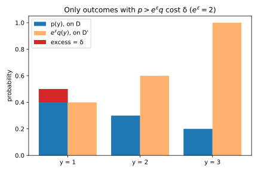
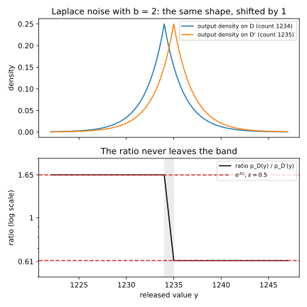
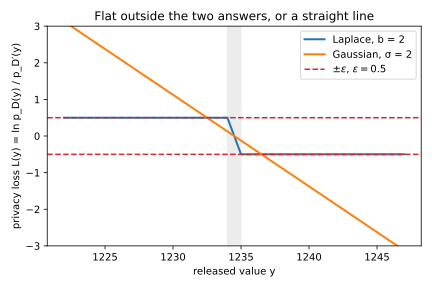
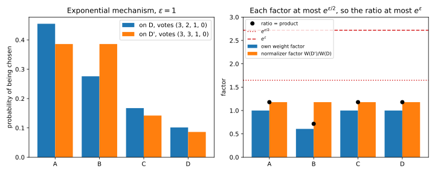
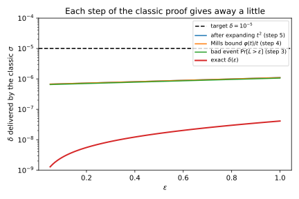
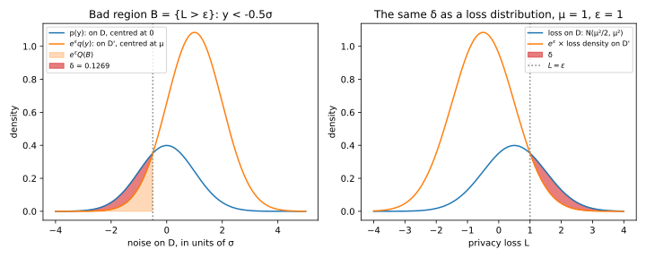
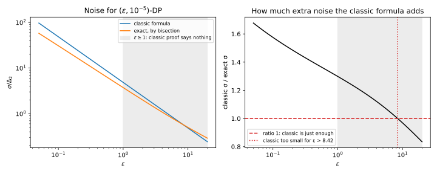
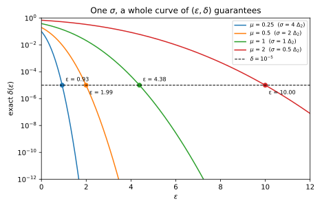
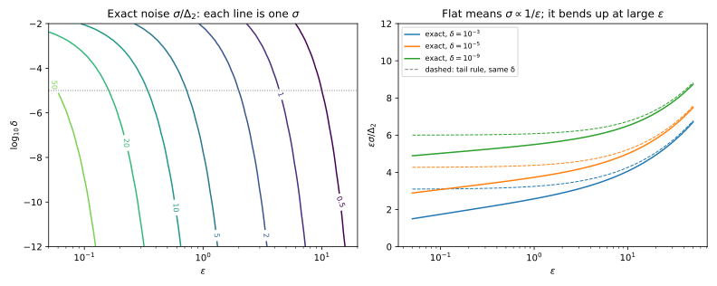

Appendix A — How much noise to add
Every differentially private release in this book adds random noise to numbers computed from people’s data. This appendix derives from scratch how much noise is enough for the mechanisms the book uses most. They are Laplace noise for pure differential privacy (DP), Gaussian noise for approximate DP, which allows a small failure probability, randomized response for a single bit, and the exponential mechanism for a choice among candidates. It assumes only that you know what a probability density, an average, a logarithm and an exponential are, and it builds the definition of DP on the page.
All of these results rest on one quantity, the privacy loss. It measures how much more likely an output is when one person’s record is in the data than when it is changed. Each mechanism is calibrated by a bound on the privacy loss, at every output for pure DP and except on outputs of small total probability for approximate DP. Table A.1 shows where the chapters state and use each formula.
| Section of this appendix | What it derives | Where the chapters state or use it |
|---|---|---|
| Section A.1 | The definition, the privacy loss and the exact \(\delta\) | Section 18.1, Section 18.2, Section 18.4 |
| Section A.2 | Sensitivity of counts, sums, means and histograms | Section 20.1 |
| Section A.3 | Laplace noise of scale \(\Delta_1/\varepsilon\) gives \(\varepsilon\)-DP | Section 20.2 |
| Section A.4 | Randomized response and its unbiased estimate | Section 18.3 |
| Section A.5 | The exponential mechanism and its utility | Section 22.1, Section 22.2 |
| Section A.6 | The classic Gaussian formula \(\sigma = \Delta_2\sqrt{2\ln(1.25/\delta)}/\varepsilon\) | Section 20.3 |
| Section A.7 | The exact Gaussian \(\delta(\varepsilon)\) and the smallest \(\sigma\) | Section 20.4, Section 20.5 |
| Section A.8 | Computing \(\delta\) in code, and how \(\varepsilon\), \(\delta\), \(\sigma\) and \(\Delta_2\) trade off | Section 20.4, Section 46.5 |
A.1 What differential privacy promises, and the privacy loss
A.1.1 The question
Before you can ask how much noise is enough, you need to know what “enough” means. What exactly must the noisy output satisfy, and how do you check it for one mechanism?
A.1.2 The answer
A dataset is a collection of records, one per person. Two datasets \(D\) and \(D'\) are neighbours if they differ in one person’s record, in one of two senses. Under add/remove, \(D'\) is \(D\) with one record added or removed, so the size \(n\) is itself protected. Under replace-one, \(D'\) is \(D\) with one record changed, so \(n\) is the same on both and treated as public. This appendix uses add/remove unless it says otherwise, as the chapters do for counts and histograms.
A mechanism \(M\) is a randomized algorithm, which returns a random output \(M(D)\) on a dataset \(D\). Write \(p_D(y)\) for the probability (or density) that \(M(D)\) outputs \(y\), and \(p_{D'}(y)\) for the same on the neighbour. An event \(S\) is any set of outputs, such as “the released count is above 1240”. The privacy parameter \(\varepsilon \ge 0\) says that one record may change the probability of an event by at most a factor \(e^\varepsilon\), so a small \(\varepsilon\) means a factor close to 1. Formally, \(M\) is \(\varepsilon\)-differentially private (\(\varepsilon\)-DP) if for every pair of neighbours and every event \(S\), \[\Pr[M(D) \in S] \le e^\varepsilon\,\Pr[M(D') \in S]. \tag{A.1}\]
The weaker version allows a small slack \(\delta\) on top of the factor. A mechanism is \((\varepsilon, \delta)\)-differentially private if, for every pair of neighbours and every event \(S\), \[\Pr[M(D) \in S] \le e^\varepsilon\,\Pr[M(D') \in S] + \delta. \tag{A.2}\] So the factor \(e^\varepsilon\) holds, except for a \(\delta\) of probability. Both definitions must also hold with \(D\) and \(D'\) swapped, since a neighbour of \(D'\) is \(D\).
One quantity decides both definitions, the privacy loss of an output \(y\). It is the log of how much more likely \(y\) is on \(D\) than on \(D'\): \[L(y) = \ln\frac{p_D(y)}{p_{D'}(y)}. \tag{A.3}\] A loss of 0 says nothing about which dataset was used, and a loss of \(\varepsilon\) means that \(y\) is \(e^\varepsilon\) times more likely on \(D\). Two facts, proved below, turn the definitions into statements about \(L\). First, if \(L(y) \le \varepsilon\) for every output \(y\) and every ordered pair of neighbours, the mechanism is \(\varepsilon\)-DP. Second, call the outputs where the loss exceeds \(\varepsilon\) the bad set, \(B = \{y : L(y) > \varepsilon\}\). For one pair at a given \(\varepsilon\), the smallest \(\delta\) that works is the probability of the bad set on \(D\), minus \(e^\varepsilon\) times its probability on \(D'\): \[\delta(\varepsilon) = \Pr[M(D) \in B] - e^\varepsilon\,\Pr[M(D') \in B]. \tag{A.4}\]
A.1.3 A worked example
Take a mechanism with three possible outputs, and the probabilities in Table A.2 on a dataset \(D\) and its neighbour \(D'\).
| Output \(y\) | 1 | 2 | 3 |
|---|---|---|---|
| \(p_D(y)\) | 0.5 | 0.3 | 0.2 |
| \(p_{D'}(y)\) | 0.2 | 0.3 | 0.5 |
| Ratio \(p_D(y)/p_{D'}(y)\) | 2.5 | 1 | 0.4 |
| Privacy loss \(L(y)\) | 0.9163 | 0 | \(-0.9163\) |
| \(p_D(y) - 2\,p_{D'}(y)\) | 0.1 | \(-0.3\) | \(-0.8\) |
The largest ratio is 2.5, at output 1, so this pair is \(\varepsilon\)-DP with \(\varepsilon = \ln 2.5 = 0.9163\) and with nothing smaller. Now ask for a smaller \(\varepsilon\), so that the factor \(e^\varepsilon\) is 2 instead of 2.5. Output 1 then breaks the factor, and it is the only output in the bad set, because only there is the ratio above 2. So Equation A.4 gives \(\delta = 0.5 - 2 \times 0.2 = 0.1\). Figure A.1 draws it: \(\delta\) is the red part of the first bar, the probability that sticks out above \(e^\varepsilon\) times the neighbour’s.

Note that \(\delta\) is not the probability of the bad set, which here is 0.5. The factor \(e^\varepsilon\) allows most of that probability, and only the excess counts.
A.1.4 Why it works
- A pointwise bound gives the event bound. Suppose \(L(y) \le \varepsilon\) at every output, that is \(p_D(y) \le e^\varepsilon p_{D'}(y)\). The probability of an event is the sum of the probabilities of its outputs, so a sum of this inequality over the outputs in \(S\) gives \(\Pr[M(D) \in S] \le e^\varepsilon\Pr[M(D') \in S]\). For a density the sum is an integral, and the same step works. So a bound on the loss at every output is enough for \(\varepsilon\)-DP.
- The slack for one event is a sum over its outputs. Move the \(e^\varepsilon\) term to the left in Equation A.2. Then the event \(S\) needs \(\delta \ge \Pr[M(D) \in S] - e^\varepsilon\Pr[M(D') \in S]\), and the right side is the sum, over the outputs \(y\) in \(S\), of \(p_D(y) - e^\varepsilon p_{D'}(y)\).
- The worst event takes exactly the outputs with a positive term. The sum is largest when it includes every output whose term is positive and no other. A term is positive exactly when \(p_D(y) > e^\varepsilon p_{D'}(y)\), that is when \(L(y) > \varepsilon\). So the worst event is the bad set \(B\), and the smallest \(\delta\) that covers every event is its sum, Equation A.4.
- The probability of the bad set is always a valid \(\delta\). The term \(e^\varepsilon\Pr[M(D') \in B]\) is never negative, so without it \(\delta(\varepsilon) \le \Pr[M(D) \in B] = \Pr[L > \varepsilon]\), where the loss is computed at an output drawn from \(M(D)\). The classic Gaussian formula of Section A.6 uses this simpler bound.
A.1.5 Checking it
The script that comes with this appendix (see the Code section at the end) lists all 7 non-empty events of the three-output example. No event has a larger ratio of probabilities than the single output 1, and the largest excess at \(e^\varepsilon = 2\) is the sum over the bad set. The probability of the bad set is five times the exact \(\delta\), which shows how loose step 4 can be.
A.1.6 Recipe and pitfalls
To check a mechanism, write down its privacy loss for a pair of neighbours. If the loss never exceeds \(\varepsilon\), you have \(\varepsilon\)-DP. If it does, the exact \(\delta\) is the excess mass of Equation A.4, maximized over pairs of neighbours.
The most common mistake is to apply \(\delta\) to each output instead of each event. That pays the slack once per output, and with many outputs it allows a mechanism that reveals everything (Section 18.2 gives the example). The second mistake is to forget the neighbouring relation. A replacement is a removal followed by an addition, so a guarantee under replace-one can cost up to twice the \(\varepsilon\) of one under add/remove. So every guarantee must say which relation it uses. Section 18.4 writes the same exact \(\delta\) as a divergence, and Section D.1 explains what \(\varepsilon\) means for an attacker.
A.2 Sensitivity: how much one person can move the answer
A.2.1 The question
Noise has to hide the effect of any one person. So before you choose the noise, you need to know how far one person can move the answer. How do you compute that for the queries you actually run?
A.2.2 The answer
Let \(f\) be the query, a function that takes a dataset and returns \(d\) numbers. The sensitivity of \(f\) is the largest change that one person can cause, over all pairs of neighbours. The change \(v = f(D) - f(D')\) is a list of numbers, and its size can be measured in two ways. The \(\ell_1\) norm \(\|v\|_1 = |v_1| + \dots + |v_d|\) adds up the absolute changes, and Laplace noise is calibrated to it. The \(\ell_2\) norm \(\|v\|_2 = \sqrt{v_1^2 + \dots + v_d^2}\) is the straight-line length of the change, and Gaussian noise is calibrated to it. So there are two sensitivities, one for each norm: \[\Delta_1 = \max_{D \sim D'}\|f(D) - f(D')\|_1, \qquad \Delta_2 = \max_{D \sim D'}\|f(D) - f(D')\|_2. \tag{A.5}\] Table A.3 gives them for the standard queries. Values are clipped to a range \([0, C]\): any value above \(C\) is replaced by \(C\) before the query runs, so no record can contribute more than \(C\).
| Query | Add/remove \(\Delta_1\) | Add/remove \(\Delta_2\) | Replace-one \(\Delta_1\) | Replace-one \(\Delta_2\) |
|---|---|---|---|---|
| Count of records | 1 | 1 | 0 | 0 |
| Sum of values clipped to \([0, C]\) | \(C\) | \(C\) | \(C\) | \(C\) |
| Mean of \(n\) clipped values, \(n\) public | no useful bound | no useful bound | \(C/n\) | \(C/n\) |
| Histogram, each record in one bin | 1 | 1 | 2 | \(\sqrt2\) |
| \(d\) counts that one record can all change by 1 | \(d\) | \(\sqrt d\) | \(d\) | \(\sqrt d\) |
A.2.3 A worked example
A study releases the mean age of \(n = 1000\) patients, with ages clipped to \([0, 100]\), under replace-one. One patient’s age can change from 0 to 100 at most, so the sum moves by at most \(C = 100\). The mean is the sum divided by the fixed \(n\), so it moves by at most \(100/1000 = 0.1\) years. That is the sensitivity, \(\Delta_1 = \Delta_2 = 0.1\), however old the patients actually are.
A.2.4 Why it works
Each row asks what the single worst record can do.
- Count. To add or remove a person changes the count by exactly 1. To replace a person leaves it unchanged, which is why under replace-one the count of all records is public anyway.
- Sum of clipped values. A new person with value \(x\) in \([0, C]\) changes the sum by \(x\), at most \(C\). To replace \(x\) by \(x'\) changes it by \(|x - x'|\), again at most \(C\). Both bounds are reached with \(x = C\) and \(x' = 0\).
- Mean. Under replace-one, the mean is the sum divided by the public \(n\), so its sensitivity is the sum’s divided by \(n\), which is \(C/n\). Under add/remove the divisor changes too, and the change depends on \(n\), which is private. The script finds that for datasets of 1 to 3 values in \([0, 3]\) one record can move the mean by 1.5, from the mean of \(\{0\}\) to the mean of \(\{0, 3\}\). The usual fix is to release a noisy sum and a noisy count separately and divide them.
- Histogram. Under add/remove the person lands in one bin, so one bin changes by 1, and both norms of the change are 1. Under replace-one one bin loses 1 and another gains 1, so the \(\ell_1\) norm is \(1 + 1 = 2\) and the \(\ell_2\) norm is \(\sqrt{1^2 + 1^2} = \sqrt2\).
- Counts that one person can all touch. Suppose each person answers \(d\) yes/no questions and you release the number of “yes” answers to each. One person who says yes to all \(d\) moves every count by 1, so the \(\ell_1\) norm of the change is \(d\) and the \(\ell_2\) norm is \(\sqrt{d \cdot 1^2} = \sqrt d\).
The last row shows why the two norms matter. When one person spreads their effect over many coordinates, \(\Delta_1\) grows like \(d\) but \(\Delta_2\) only like \(\sqrt d\). The noise is scaled to the sensitivity, as the next sections show, so Gaussian noise wins for long vectors (Section 20.5).
A.2.5 Checking it
The script lists every dataset of 1 to 3 records with values in \(\{0, 1, 2, 3\}\), so \(C = 3\), and every neighbour under both relations, and takes the largest change. With 4 histogram bins and \(d = 3\) questions, it reproduces every row of Table A.3.
A.2.6 Recipe and pitfalls
First fix the neighbouring relation. Then ask what the worst single record can do to each coordinate, and add the changes up in the norm your noise needs. Compute the sensitivity before you look at the data, because it is a worst case over everything the domain allows, not over the data you hold.
Unbounded data has infinite sensitivity. If ages, incomes or gradients can be as large as anyone likes, one record can move a sum by any amount, and no finite noise hides it. So clip every value to a fixed range first, and calibrate to the clipping norm. A second pitfall is a person who contributes many records. If one person can add 5 ratings, a count of ratings has sensitivity 5 per person, not 1. Section C.1 applies the same reasoning to clipped gradients.
A.3 Laplace noise: scale \(\Delta_1/\varepsilon\) gives \(\varepsilon\)-DP
A.3.1 The question
You want to publish a count, or a few numbers, with pure \(\varepsilon\)-DP. How wide must the Laplace noise be, and how far will the published answer be from the truth?
A.3.2 The answer
The Laplace distribution is a two-sided exponential, peaked at 0. With scale \(b\), its typical size, it puts density \(\frac{1}{2b}e^{-|z|/b}\) at each value \(z\). The Laplace mechanism adds independent Laplace noise to each of the \(d\) numbers, with the scale set to the \(\ell_1\) sensitivity divided by \(\varepsilon\): \[M(D) = f(D) + (Z_1, \dots, Z_d), \qquad Z_i \sim \mathrm{Lap}(b), \qquad b = \frac{\Delta_1}{\varepsilon}. \tag{A.6}\] It is \(\varepsilon\)-DP. For one number, the error is the noise itself, and it exceeds a threshold \(\tau\) with probability exactly \(e^{-\tau/b}\). So with probability 0.95 the error is at most \(b\ln 20\).
A.3.3 A worked example
A hospital has 1,234 patients with diabetes. On the neighbouring dataset \(D'\) there is one more, so the two true counts are 1234 and 1235, and \(\Delta_1 = 1\). With \(\varepsilon = 0.5\), the scale is \(b = 1/0.5 = 2\).
The privacy loss at an output \(y\) is the log of the ratio of the two Laplace densities. The factors \(\frac{1}{2b}\) cancel, and the log of a ratio of exponentials is the difference of the exponents, so \[L(y) = \frac{|y - 1235| - |y - 1234|}{b}. \tag{A.7}\] Table A.4 evaluates it at five outputs.
| Output \(y\) | 1230 | 1234 | 1234.5 | 1235 | 1240 |
|---|---|---|---|---|---|
| \(p_D(y)\) | 0.0338 | 0.2500 | 0.1947 | 0.1516 | 0.0124 |
| \(p_{D'}(y)\) | 0.0205 | 0.1516 | 0.1947 | 0.2500 | 0.0205 |
| Ratio | 1.6487 | 1.6487 | 1.0000 | 0.6065 | 0.6065 |
| \(L(y)\) | 0.5 | 0.5 | 0 | \(-0.5\) | \(-0.5\) |
At \(y = 1230\) the loss is \((5 - 4)/2 = 0.5\), and at \(y = 1240\) it is \((5 - 6)/2 = -0.5\). Below both true counts the ratio stays at \(e^{0.5} = 1.6487\), above both it stays at \(e^{-0.5} = 0.6065\), and between them it moves from one to the other. It never goes further, however far out the output lands.
For accuracy, the 95% error bound is \(b\ln 20 = 2 \times 2.9957 = 5.99\), so the published count is within about 6 of 1234 in 95% of releases. The bound scales with \(1/\varepsilon\), so it is 29.96 at \(\varepsilon = 0.1\).
A.3.4 Why it works
- Only the shift matters. Write \(a = f(D)\) and \(a' = f(D')\) for the two true answers. For one number, the privacy loss at \(y\) is \((|y - a'| - |y - a|)/b\), as in the example.
- Bound it with the triangle inequality. The distance from \(y\) to \(a'\) is at most the distance from \(y\) to \(a\) plus the distance from \(a\) to \(a'\), so \(|y - a'| - |y - a| \le |a - a'|\). In the example, with \(y = 1230\), this says \(5 - 4 \le 1\).
- The shift is at most the sensitivity. So \(L(y) \le |a - a'|/b \le \Delta_1/b\), and with \(b = \Delta_1/\varepsilon\) that is \(\varepsilon\). This holds at every output \(y\).
- Several numbers. With \(d\) coordinates and independent noise, the density of the output is the product of the \(d\) coordinate densities. The log of a product is a sum, so the privacy loss is the sum of the coordinate losses. Each is at most \(|a_i - a'_i|/b\) by step 2, and their sum is at most \(\|a - a'\|_1/b \le \Delta_1/b = \varepsilon\).
- Conclude. The loss is at most \(\varepsilon\) at every output, for every pair of neighbours in either order. So by step 1 of Section A.1 the mechanism is \(\varepsilon\)-DP.
- Accuracy. The absolute error \(|Z|\) has density \(\frac{1}{b}e^{-z/b}\) for \(z \ge 0\), twice the Laplace density on one side. Its integral from \(\tau\) to infinity is \(e^{-\tau/b}\), and \(e^{-\tau/b} = 0.05\) gives \(\tau = b\ln 20\). The same density has average \(\int_0^\infty z\frac1be^{-z/b}\,\mathrm dz = b\), so the typical error is \(b\).
No smaller scale works, because the bound of step 2 holds with equality at every output below both true answers. With a smaller scale \(b\) the loss there would be \(1/b > \varepsilon\), and those outputs would break the factor \(e^\varepsilon\). For the count above, the event “the output is at most 1234” has probability 0.5 on \(D\) and \(\frac12e^{-1/b} = 0.3033\) on \(D'\), a ratio of exactly \(e^{0.5}\).
A.3.5 Checking it
Figure A.2 draws the two densities and their ratio for the example, and Figure A.3 draws the privacy loss itself. On a grid of 70,001 outputs from 1200 to 1270, the script finds the loss in exactly \([-0.5000, 0.5000]\).


For several numbers, the script takes three yes/no counts that one person can all raise by 1, so \(\Delta_1 = 3\) and \(b = 3/0.5 = 6\). Over 100,000 random outputs, the largest privacy loss is 0.5000, the \(\varepsilon\) that step 4 promises. For accuracy, a million draws of \(\mathrm{Lap}(2)\) give a mean absolute error of 2.0026 against the exact 2, and a 95th percentile of 5.9938 against \(b\ln 20 = 5.9915\).
A.3.6 Recipe and pitfalls
- Compute the \(\ell_1\) sensitivity \(\Delta_1\) under your neighbouring relation.
- Set \(b = \Delta_1/\varepsilon\) and add independent \(\mathrm{Lap}(b)\) noise to every coordinate.
- Quote the error: \(b\) on average, and \(b\ln 20\) with probability 0.95 for each coordinate.
The noise does not depend on the number of people, so small groups are expensive. Use fresh noise for every release, because an analyst can subtract out a noise draw that is used again. To release the same count \(k\) times with fresh noise costs \(k\varepsilon\), which Section B.1 derives. Section 20.2 adds the bound on the largest error over \(d\) coordinates.
A.4 Randomized response: one bit, \(\varepsilon\)-DP
A.4.1 The question
Each person holds one sensitive bit, such as “I have used a drug”, and nobody is trusted to see the true bits. How often should each person tell the truth, and how do you estimate the fraction of ones from the noisy reports?
A.4.2 The answer
Each person reports their true bit with probability \(t\) and the flipped bit with probability \(1 - t\), where \[t = \frac{e^\varepsilon}{1 + e^\varepsilon}. \tag{A.8}\] This is \(\varepsilon\)-DP under replace-one. If \(\bar y\) is the fraction of reported ones among \(n\) people, an unbiased estimate of the true fraction \(\pi\) of ones is \[\hat\pi = \frac{\bar y - (1 - t)}{2t - 1}, \qquad \operatorname{sd}(\hat\pi) = \frac{\sqrt{t(1 - t)}}{(2t - 1)\sqrt n}. \tag{A.9}\]
A.4.3 A worked example
At \(\varepsilon = 0.5\), \(t = e^{0.5}/(1 + e^{0.5}) = 0.6225\). A true 1 is reported as 1 with probability 0.6225, and a true 0 is reported as 1 with probability 0.3775. Their ratio is \(0.6225/0.3775 = 1.6487 = e^{0.5}\).
Survey \(n = 1000\) people, of whom a fraction \(\pi = 0.3\) have the bit. The expected fraction of reported ones is \(0.3 \times 0.6225 + 0.7 \times 0.3775 = 0.4510\). The estimate subtracts \(1 - t = 0.3775\) and divides by \(2t - 1 = 0.2449\), which turns this back into 0.3. Its standard deviation is \(\sqrt{0.6225 \times 0.3775}/(0.2449\sqrt{1000}) = 0.0626\).
A.4.4 Why it works
- Privacy. There are two inputs and two outputs. A report of 1 has probability \(t\) if the bit is 1 and \(1 - t\) if it is 0, so its privacy loss is \(\ln(t/(1 - t))\). With \(t = e^\varepsilon/(1 + e^\varepsilon)\), the ratio is \(t/(1 - t) = e^\varepsilon\). A report of 0 has the inverse ratio, so \(|L| \le \varepsilon\) at both outputs.
- Many people. People flip their own coins independently, so the probability of all the reports is a product with one factor per person. Under replace-one, neighbours differ in one person’s bit, so every other factor is the same on both datasets and cancels in the ratio. The loss is that one person’s loss.
- The expected report. A person with bit 1 reports 1 with probability \(t\), and a person with bit 0 with probability \(1 - t\). The average over the population is \(\mathbb E[\bar y] = \pi t + (1 - \pi)(1 - t) = (1 - t) + \pi(2t - 1)\).
- Remove the bias. Solve that equation for \(\pi\) to get \(\hat\pi\). It is a linear function of \(\bar y\), so its average is the true \(\pi\).
- The spread. Each report is a 0/1 variable with variance \(t(1 - t)\), whatever the true bit, and the reports are independent. So \(\bar y\) has variance \(t(1 - t)/n\), and the division by \(2t - 1\) divides the standard deviation by \(2t - 1\).
A.4.5 Checking it
Ten thousand simulated surveys give a mean estimate of 0.2996 and a standard deviation of 0.0629, against 0.3 and 0.0626 from the formulas.
A.4.6 Recipe and pitfalls
Set \(t = e^\varepsilon/(1 + e^\varepsilon)\), collect the reports, and compute \(\hat\pi\). Expect an error of about \(1/(\varepsilon\sqrt n)\) for small \(\varepsilon\). The reason is that \(e^\varepsilon \approx 1 + \varepsilon\) there, so \(t \approx (1 + \varepsilon)/2\), which makes \(2t - 1 \approx \varepsilon/2\) and \(t(1 - t) \approx \frac14\).
The price of trusting nobody is large. If one trusted party could see the true bits, it could add \(\mathrm{Lap}(1/\varepsilon)\) noise to their count instead, and the error on the fraction would fall like \(1/n\), not like \(1/\sqrt n\). The guarantee also holds only under replace-one. Under add/remove the neighbour has one report more or fewer, and the number of reports, which is published, shows the difference at once. Section 18.3 compares the two designs.
A.5 The exponential mechanism: choosing the best candidate
A.5.1 The question
Sometimes the output is not a number but a choice: the best model, the most common diagnosis, the winner of a vote. Noise added to a name makes no sense. How do you choose privately, and how good is the choice?
A.5.2 The answer
Fix a list of candidates \(\mathcal R\) in advance, and write \(|\mathcal R|\) for their number. For each candidate \(r\), a score \(u(D, r)\) says how good it is on dataset \(D\), where higher is better. Let \(\Delta u\) be the sensitivity of the score, the most that one person can change any one candidate’s score.
The exponential mechanism gives each candidate a weight \(\exp(\varepsilon u(D, r)/(2\Delta u))\), which grows with its score. It then picks a candidate with probability equal to its share of the total weight \(W(D)\), the normalizer, which makes the probabilities add up to 1: \[\Pr[M_E(D) = r] = \frac{\exp\big(\frac{\varepsilon\,u(D, r)}{2\Delta u}\big)}{W(D)}, \qquad W(D) = \sum_{s \in \mathcal R}\exp\Big(\frac{\varepsilon\,u(D, s)}{2\Delta u}\Big). \tag{A.10}\] The mechanism is \(\varepsilon\)-DP, and its choice is rarely far below the best score \(\mathrm{OPT}(D)\). For every \(t > 0\), \[\Pr\Big[u(D, M_E(D)) \le \mathrm{OPT}(D) - \frac{2\Delta u}{\varepsilon}(\ln |\mathcal R| + t)\Big] \le e^{-t}. \tag{A.11}\]
A.5.3 A worked example
Six people vote among options A, B, C and D. On \(D\) the counts are \((3, 2, 1, 0)\), and on the neighbour \(D'\) one more person votes for B, so the counts are \((3, 3, 1, 0)\). The score is the count, so \(\Delta u = 1\). Take \(\varepsilon = 1\), so each weight is \(e^{u/2}\).
On \(D\) the weights are \(e^{1.5} = 4.4817\), \(e^{1} = 2.7183\), \(e^{0.5} = 1.6487\) and \(e^0 = 1\), which sum to \(W(D) = 9.8487\). So A is chosen with probability \(4.4817/9.8487 = 0.4551\). On \(D'\) B’s weight rises to \(e^{1.5}\) and the normalizer to \(W(D') = 11.6121\). Table A.5 lists all four probabilities.
| Option | A | B | C | D |
|---|---|---|---|---|
| \(\Pr[M_E(D) = r]\) | 0.4551 | 0.2760 | 0.1674 | 0.1015 |
| \(\Pr[M_E(D') = r]\) | 0.3859 | 0.3859 | 0.1420 | 0.0861 |
| Ratio | 1.1790 | 0.7151 | 1.1790 | 1.1790 |
For A, C and D the score did not change, so the ratio is just the change in the normalizer, \(11.6121/9.8487 = 1.1790\). B’s own weight is also \(e^{1/2}\) times larger on \(D'\) than on \(D\), so its ratio is \(1.1790 \times e^{-1/2} = 1.1790 \times 0.6065 = 0.7151\). The largest privacy loss on this pair is \(|\ln 0.7151| = 0.3353\), well below \(\varepsilon = 1\).
A.5.4 Why it works
Privacy. The probability of \(r\) is a weight divided by a total, and one person can change both. So split the ratio of the probabilities on \(D\) and \(D'\) into two factors: \[\frac{\Pr[M_E(D) = r]}{\Pr[M_E(D') = r]} = \exp\Big(\frac{\varepsilon\big(u(D, r) - u(D', r)\big)}{2\Delta u}\Big) \cdot \frac{W(D')}{W(D)}. \tag{A.12}\]
- The own-weight factor. One person changes \(r\)’s score by at most \(\Delta u\), so the exponent is at most \(\varepsilon\Delta u/(2\Delta u) = \varepsilon/2\), and the factor is at most \(e^{\varepsilon/2}\).
- The normalizer factor. Every candidate’s score on \(D'\) is at most \(\Delta u\) above its score on \(D\), so every term of \(W(D')\) is at most \(e^{\varepsilon/2}\) times the matching term of \(W(D)\). The sum of the terms gives \(W(D') \le e^{\varepsilon/2}W(D)\).
- Multiply. The ratio is at most \(e^{\varepsilon/2} \cdot e^{\varepsilon/2} = e^\varepsilon\). The candidate and the pair were arbitrary, and the same argument works with \(D\) and \(D'\) swapped, so by step 1 of Section A.1 the mechanism is \(\varepsilon\)-DP.
The 2 in the exponent is there because both factors can be large at once. One person can raise \(r\)’s score and lower all the others, so each factor needs its own half of the budget.
Utility. Call a candidate poor if its score is at least \(c\) below the best.
- Poor candidates are light. The weight grows with the score, so each has weight at most \(e^{\varepsilon(\mathrm{OPT} - c)/(2\Delta u)}\).
- The normalizer is heavy. It contains the weight of a best candidate, so \(W(D) \ge e^{\varepsilon\,\mathrm{OPT}/(2\Delta u)}\).
- Divide. There are at most \(|\mathcal R|\) poor candidates, so together they have probability at most \(|\mathcal R|\,e^{\varepsilon(\mathrm{OPT} - c)/(2\Delta u)}/e^{\varepsilon\,\mathrm{OPT}/(2\Delta u)} = |\mathcal R|\,e^{-\varepsilon c/(2\Delta u)}\).
- Solve for \(c\). Set \(|\mathcal R|\,e^{-\varepsilon c/(2\Delta u)} = e^{-t}\) and take logs. This gives \(c = \frac{2\Delta u}{\varepsilon}(\ln |\mathcal R| + t)\).
A.5.5 Checking it
Figure A.4 draws each ratio of the vote as its two factors. Only B’s score moved, so for A, C and D the own-weight factor is exactly 1.

The utility bound says nothing for so small a vote: step 3 bounds the probability 0.2689 of C or D, at least \(c = 2\) below A, only by \(4e^{-1} = 1.4715\). It helps when there are many candidates. Take 50 models scored by their correct predictions, \(900, 899, \dots, 851\), so that \(\Delta u = 1\). With \(\varepsilon = 1\) and \(t = 3\), the bound says the gap exceeds \(2(\ln 50 + 3) = 13.82\) with probability at most \(e^{-3} = 0.0498\). The exact probability is \(9.12\times10^{-4}\), much smaller, because most models are far below the best and much lighter than the bound assumes.
A.5.6 Recipe and pitfalls
- Fix the list of candidates before you look at the data, and choose a score \(u(D, r)\).
- Find the score’s sensitivity \(\Delta u\).
- Sample \(r\) with probability proportional to \(\exp(\varepsilon u(D, r)/(2\Delta u))\).
The candidate list must not depend on the data, because the proof compares the same list on \(D\) and \(D'\). Subtract the largest score before you take exponentials, which prevents overflow and changes no probability. Sometimes every score moves the same way under each change of one person, as counts under add/remove do. Then the two factors cannot both be large, and the 2 can go (Section 22.1). Section 22.2 adds the expected gap and the applications.
A.6 Gaussian noise, the classic formula
A.6.1 The question
Gaussian noise is calibrated to the \(\ell_2\) sensitivity, which is much smaller than the \(\ell_1\) sensitivity for long vectors such as gradients. But its privacy loss has no upper limit (Figure A.3), so it can never give pure \(\varepsilon\)-DP. How much Gaussian noise gives \((\varepsilon, \delta)\)-DP, and where does the textbook formula come from?
A.6.2 The answer
Add independent normal noise with mean 0 and standard deviation \(\sigma\) to each coordinate. For \(0 < \varepsilon < 1\) and \(0 < \delta < 1\), the Gaussian mechanism with \[\sigma = \frac{\Delta_2\sqrt{2\ln(1.25/\delta)}}{\varepsilon} \tag{A.13}\] is \((\varepsilon, \delta)\)-DP. The proof below needs \(\delta \le 0.7448\), which every useful \(\delta\) satisfies.
A.6.3 A worked example
Release the diabetes count with \(\Delta_2 = 1\), \(\varepsilon = 0.5\) and \(\delta = 10^{-5}\). Then \(\ln(1.25/10^{-5}) = \ln 125{,}000 = 11.7361\), and its double has square root \(c = \sqrt{23.4722} = 4.8448\). So \(\sigma = 4.8448/0.5 = 9.6896\). The 95% error of normal noise is 1.96 standard deviations, here 18.99, against 5.99 for Laplace noise at the same \(\varepsilon\). So Gaussian noise pays off only for long vectors.
A.6.4 Why it works
The proof finds the privacy loss, which turns out to be a normal random variable. Then it shows that the loss exceeds \(\varepsilon\) with probability at most \(\delta\), and that this is enough. Write \(\Phi(x)\) for the standard normal cumulative distribution function, the probability that a normal variable with mean 0 and standard deviation 1 is below \(x\), and \(\varphi(x) = e^{-x^2/2}/\sqrt{2\pi}\) for its density.
- The privacy loss is a straight line in the noise. Take one number, with true answers \(a\) on \(D\) and \(a + s\) on \(D'\), where \(s\) is the shift between them. An output from \(M(D)\) is \(y = a + z\), where \(z\) is the noise. Its density on \(D\) is proportional to \(e^{-z^2/(2\sigma^2)}\) and on \(D'\) to \(e^{-(z - s)^2/(2\sigma^2)}\), because \(y\) sits \(z - s\) away from \(D'\)’s answer. The log of the ratio is the difference of the exponents: \[L = \frac{(z - s)^2 - z^2}{2\sigma^2} = \frac{s^2 - 2sz}{2\sigma^2}. \tag{A.14}\]
- So the loss is normal. The noise \(z\) is normal with mean 0 and standard deviation \(\sigma\), and \(L\) is a constant minus a multiple of \(z\), so \(L\) is normal with mean \(s^2/(2\sigma^2)\) and standard deviation \(2s\sigma/(2\sigma^2) = s/\sigma\). Write \(\mu = s/\sigma\) for the shift measured in noise standard deviations. Then \(L\) has mean \(\mu^2/2\) and standard deviation \(\mu\). For a vector the same holds with \(s = \|f(D) - f(D')\|_2\). The reason is that the expansion of the squared distances leaves only the noise’s component along the direction of the shift, and that component is a single normal number with standard deviation \(\sigma\).
- A small chance of a large loss is enough. Let \(B\) be the bad set, the outputs with \(L > \varepsilon\), and suppose its probability on \(D\) is at most \(\delta\). Split any event \(S\) into its part inside \(B\) and its part outside. The part inside has probability at most \(\delta\), because it is part of \(B\). On the part outside, every output has \(p_D(y) \le e^\varepsilon p_{D'}(y)\), so its probability is at most \(e^\varepsilon\Pr[M(D') \in S]\). The sum of the two parts gives \[\Pr[M(D) \in S] \le e^\varepsilon\Pr[M(D') \in S] + \delta, \tag{A.15}\] which is Equation A.2. So the rare outputs with a large loss are paid for by \(\delta\), and every other output keeps the factor \(e^\varepsilon\). The pair in the other order has the same loss distribution, by the symmetry of the normal curve, so it needs nothing new.
- The bad event is a normal tail. Standardize the loss: subtract its mean \(\mu^2/2\) and divide by its standard deviation \(\mu\). The result is a standard normal variable, and \(L > \varepsilon\) exactly when it exceeds the point \(t = (\varepsilon - \mu^2/2)/\mu = \varepsilon/\mu - \mu/2\). By the symmetry of the normal curve, \(\Pr[L > \varepsilon] = \Phi(-t)\). A larger shift makes \(t\) smaller and the tail heavier, so the worst pair has the largest shift, \(s = \Delta_2\).
- Put in the formula. Write \(c = \sqrt{2\ln(1.25/\delta)}\), so Equation A.13 is \(\sigma = c\Delta_2/\varepsilon\). Then \(\mu = \Delta_2/\sigma = \varepsilon/c\), and \[t = \frac{\varepsilon}{\mu} - \frac{\mu}{2} = c - \frac{\varepsilon}{2c}. \tag{A.16}\]
- Bound the normal tail. For \(t > 0\), every point \(z\) beyond \(t\) has \(z/t \ge 1\), so the tail \(\int_t^\infty\varphi(z)\,\mathrm dz\) is at most \(\int_t^\infty\frac{z}{t}\varphi(z)\,\mathrm dz\). The derivative of \(\varphi(z)\) is \(-z\varphi(z)\), so the second integral equals \(\varphi(t)/t\). This is the Mills-ratio bound: \[\Phi(-t) \le \frac{e^{-t^2/2}}{t\sqrt{2\pi}}. \tag{A.17}\]
- Expand \(t^2\). The square of step 5 is \(t^2 = c^2 - \varepsilon + \varepsilon^2/(4c^2)\), which is at least \(c^2 - \varepsilon\). So \(e^{-t^2/2} \le e^{-c^2/2}e^{\varepsilon/2}\). By the definition of \(c\), \(e^{-c^2/2} = \delta/1.25\). Together with step 6, \[\Pr[L > \varepsilon] \le \delta \cdot \frac{e^{\varepsilon/2}}{1.25\sqrt{2\pi}\,t}. \tag{A.18}\]
- This is where 1.25 and \(\varepsilon < 1\) come in. The bound is at most \(\delta\) when the fraction is at most 1, that is when \(t \ge e^{\varepsilon/2}/(1.25\sqrt{2\pi})\). For \(\varepsilon < 1\), the right side is below \(e^{1/2}/(1.25\sqrt{2\pi}) = 0.5262\). It remains to show that \(t\) is that large. For \(\varepsilon < 1\), step 5 gives \(t = c - \varepsilon/(2c) \ge c - 1/(2c)\). This lower bound grows with \(c\), and it equals 0.5262 at \(c = 1.0176\), the positive root of \(c^2 - 0.5262c - \frac12 = 0\). Since \(c\) grows as \(\delta\) shrinks, \(c \ge 1.0176\) holds whenever \(\delta \le 1.25e^{-1.0176^2/2} = 0.7448\). So the constant 1.25 absorbs the factor \(e^{\varepsilon/2}/(t\sqrt{2\pi})\), and the condition \(\varepsilon < 1\) keeps \(e^{\varepsilon/2}\) below \(e^{1/2}\).
A.6.5 Checking it
The proof made three approximations in a row. Step 4 replaced the exact \(\delta\) by the bad-set probability, step 6 replaced that by the Mills bound, and step 7 loosened it further with the constants. Figure A.5 follows each of them for \(\varepsilon\) up to 1 at \(\delta = 10^{-5}\), and Table A.6 gives the numbers at \(\varepsilon = 0.5\).
| Quantity at the classic \(\sigma = 9.6896\) | Value |
|---|---|
| Target \(\delta\) | \(10^{-5}\) |
| After expanding \(t^2\), step 7 | \(8.55\times10^{-7}\) |
| Mills bound \(\varphi(t)/t\), step 6 | \(8.54\times10^{-7}\) |
| Bad event \(\Pr[L > \varepsilon] = \Phi(-t)\), step 4 | \(8.21\times10^{-7}\) |
| Exact \(\delta(\varepsilon)\), from Section A.7 | \(1.61\times10^{-8}\) |
So the classic \(\sigma\) delivers a \(\delta\) 622 times smaller than asked for. The constants of step 8 cost a factor of 11.7, the correction term that step 4 drops costs a factor of 51.0, and the Mills ratio almost nothing.

A.6.6 Recipe and pitfalls
- Compute the \(\ell_2\) sensitivity \(\Delta_2\).
- For \(\varepsilon < 1\), set \(\sigma = \Delta_2\sqrt{2\ln(1.25/\delta)}/\varepsilon\).
- Add independent normal noise with that \(\sigma\) to every coordinate.
The formula is valid but wasteful, as the table shows. The proof says nothing for \(\varepsilon \ge 1\), and Section A.7 shows that the formula eventually becomes wrong there. Choose \(\delta\) much smaller than \(1/n\), for the reason step 7 of Section A.8 gives. Section 20.3 gives the same proof with the vector case in full.
A.7 Gaussian noise, the exact calibration
A.7.1 The question
The classic formula overshoots by a large factor, and it says nothing for \(\varepsilon \ge 1\). What is the smallest \(\sigma\) that gives \((\varepsilon, \delta)\)-DP, for any \(\varepsilon\)?
A.7.2 The answer
Measure the sensitivity in units of the noise, \(\mu = \Delta_2/\sigma\). The Gaussian mechanism is \((\varepsilon, \delta)\)-DP exactly when \(\delta \ge \delta(\varepsilon)\), where \[\delta(\varepsilon) = \Phi\Big(\frac{\Delta_2}{2\sigma} - \frac{\varepsilon\sigma}{\Delta_2}\Big) - e^\varepsilon\,\Phi\Big(-\frac{\Delta_2}{2\sigma} - \frac{\varepsilon\sigma}{\Delta_2}\Big) = \Phi\Big(\frac\mu2 - \frac\varepsilon\mu\Big) - e^\varepsilon\,\Phi\Big(-\frac\mu2 - \frac\varepsilon\mu\Big). \tag{A.19}\] This \(\delta(\varepsilon)\) falls as \(\sigma\) grows. So the smallest \(\sigma\) for a target \((\varepsilon, \delta)\) is the one solution of \(\delta(\varepsilon) = \delta\), which a computer finds by bisection.
A.7.3 A worked example
Both terms are large enough to see at \(\mu = 1\) and \(\varepsilon = 1\). The first term is \(\Phi(0.5 - 1) = \Phi(-0.5) = 0.3085\), the probability of the bad set on \(D\). The second is \(e \cdot \Phi(-1.5) = 0.1816\), the correction. Their difference is the exact \(\delta = 0.1269\).
Now take the count again, with \(\Delta_2 = 1\), \(\varepsilon = 0.5\) and \(\delta = 10^{-5}\). Bisection finds \(\sigma = 7.0318\), and Equation A.19 at this \(\sigma\) gives back \(\delta = 1.000\times10^{-5}\). The classic formula gave 9.6896, which is 1.378 times more noise than needed, and its true \(\delta\) is \(1.61\times10^{-8}\). With the exact \(\sigma\) the 95% error is \(1.96 \times 7.0318 = 13.78\), against 18.99 with the classic one.
A.7.4 Why it works
- Start from the exact \(\delta\). By Equation A.4, the smallest \(\delta\) for one pair of neighbours is \(\Pr[M(D) \in B] - e^\varepsilon\Pr[M(D') \in B]\), where \(B\) is the set of outputs with \(L > \varepsilon\).
- The first term. Step 4 of Section A.6 found \(\Pr[M(D) \in B] = \Phi(-t)\) with \(t = \varepsilon/\mu - \mu/2\), which is \(\Phi(\mu/2 - \varepsilon/\mu)\).
- The second term. Measure the output in units of \(\sigma\), from \(D\)’s true answer. By step 4 of Section A.6, the bad set is the outputs below \(\mu/2 - \varepsilon/\mu\). On \(D'\) the output is centred at \(\mu\) instead of 0, so it falls below that point with probability \(\Phi(\mu/2 - \varepsilon/\mu - \mu) = \Phi(-\mu/2 - \varepsilon/\mu)\).
- Combine. The first term minus \(e^\varepsilon\) times the second is Equation A.19 for this pair.
- The largest shift is the worst pair, and more noise always helps. Both claims follow if \(\delta\) grows with \(\mu\), which its derivative shows. Write \(\alpha = \mu/2 - \varepsilon/\mu\) and \(\beta = -\mu/2 - \varepsilon/\mu\) for the two arguments, so that \(\delta = \Phi(\alpha) - e^\varepsilon\Phi(\beta)\). Their derivatives in \(\mu\) are \(\frac12 + \varepsilon/\mu^2\) and \(-\frac12 + \varepsilon/\mu^2\), which differ by exactly 1. Also \(\alpha^2 - \beta^2 = (\alpha - \beta)(\alpha + \beta) = \mu \cdot (-2\varepsilon/\mu) = -2\varepsilon\), so \(\varphi(\beta) = e^{-\varepsilon}\varphi(\alpha)\). The derivative of \(\delta\) in \(\mu\) is therefore \[\varphi(\alpha)\Big(\frac12 + \frac{\varepsilon}{\mu^2}\Big) - e^\varepsilon e^{-\varepsilon}\varphi(\alpha)\Big(-\frac12 + \frac{\varepsilon}{\mu^2}\Big) = \varphi(\alpha) > 0. \tag{A.20}\] So \(\delta\) grows with the shift \(\mu\), and the worst pair of neighbours is the one with the largest shift, \(\Delta_2\). And since \(\mu = \Delta_2/\sigma\), a larger \(\sigma\) means a smaller \(\mu\) and a smaller \(\delta\). This agrees with intuition. A Gaussian mechanism with a larger \(\sigma\) is the one with a smaller \(\sigma\) plus extra independent noise, and anything you can detect after you add that noise yourself, you could detect before.
- “Exactly when.” The worst pair needs \(\delta \ge \delta(\varepsilon)\) by step 1, and every other pair needs less by step 5. So \(\delta \ge \delta(\varepsilon)\) is both necessary and enough.
- Solve by bisection. As \(\sigma\) grows from near 0 to very large, \(\delta(\varepsilon)\) falls steadily from near 1 to near 0, so it crosses the target exactly once. Bisection keeps an interval of \(\sigma\) values with the crossing inside. It evaluates \(\delta\) at the midpoint and keeps the half that still contains the crossing, so each step halves the interval. The script takes its midpoints in \(\ln\sigma\), because \(\sigma\) can range over many orders of magnitude.
A.7.5 Checking it
Figure A.6 draws the derivation at \(\mu = 1\) and \(\varepsilon = 1\). The orange area is the correction that the classic proof throws away.

The script checks the closed form in three ways. First, at \(\mu = 1\), \(\varepsilon = 1\) it integrates the excess \(p_D - e^\varepsilon p_{D'}\) over the bad set by Simpson’s rule on a fine grid, which gives 0.1269. The same \(\delta\) is also the average of \((1 - e^{\varepsilon - L})_+\) over losses drawn on \(D\), where \((x)_+\) means \(\max(x, 0)\) (Section 18.4 shows why), and a Monte Carlo average over a million draws gives 0.1270. Second, over 22 pairs of \(\varepsilon\) and \(\mu\), the closed form and the numerical integral differ by at most \(3.1\times10^{-6}\) in relative terms. Third, a numerical derivative in \(\mu\) agrees with \(\varphi(\alpha)\) of step 5 to within \(10^{-9}\) on a grid of 16 pairs.
Table A.7 compares the two calibrations at \(\delta = 10^{-5}\), and Figure A.7 draws them over a wider range.
| \(\varepsilon\) | Classic \(\sigma/\Delta_2\) | Exact \(\sigma/\Delta_2\) | Classic / exact |
|---|---|---|---|
| 0.1 | 48.4481 | 30.7496 | 1.576 |
| 0.25 | 19.3792 | 13.2855 | 1.459 |
| 0.5 | 9.6896 | 7.0318 | 1.378 |
| 1 | 4.8448 | 3.7306 | 1.299 |
| 2 | 2.4224 | 1.9938 | 1.215 |
| 4 | 1.2112 | 1.0812 | 1.120 |
| 8 | 0.6056 | 0.6002 | 1.009 |

Above \(\varepsilon = 1\) the classic formula still happens to give enough noise at \(\delta = 10^{-5}\), up to \(\varepsilon = 8.42\). Beyond that point its true \(\delta\) exceeds the target, so it is wrong there, not just unproved.
A.7.6 Recipe and pitfalls
- Compute the \(\ell_2\) sensitivity \(\Delta_2\).
- Solve \(\delta(\varepsilon) = \delta\) for \(\mu\) by bisection, with Equation A.19 and \(\Phi(x)\) computed as
0.5 * math.erfc(-x / math.sqrt(2))in Python. Then set \(\sigma = \Delta_2/\mu\). - Put \(\sigma\) back into Equation A.19 to check the answer.
Only \(\mu = \Delta_2/\sigma\) enters, so you can solve once for \(\Delta_2 = 1\) and scale. Never use the classic formula for \(\varepsilon \ge 1\). Section 20.4 derives the same formula through a divergence between the two output distributions, and Section B.3 shows that many Gaussian releases combine into one.
A.8 How ε, δ, σ and the sensitivity trade off
A.8.1 The question
In practice you start from a privacy budget \((\varepsilon, \delta)\), or from the noise \(\sigma\) you can afford, and the sensitivity \(\Delta_2\) is fixed by the query. How do you compute \(\delta\) in code without loss of accuracy? And if you halve \(\varepsilon\), make \(\delta\) a thousand times smaller or release the answer ten times, how much more noise do you need?
A.8.2 The answer
Everything follows from the exact formula Equation A.19, in which \(\mu = \Delta_2/\sigma\) is the sensitivity in units of the noise. Six facts about it answer the questions.
- Only the ratio \(\mu = \Delta_2/\sigma\) matters. So you can solve once for \(\Delta_2 = 1\) and multiply the resulting \(\sigma\) by \(\Delta_2\).
- One \(\sigma\) gives a whole curve. For a fixed \(\mu\), \(\delta(\varepsilon)\) falls as \(\varepsilon\) grows, so a Gaussian mechanism is \((\varepsilon, \delta(\varepsilon))\)-DP for every \(\varepsilon\) at once.
- The noise falls roughly like \(1/\varepsilon\), then more slowly. Write \(z_\delta\) for the point a standard normal variable exceeds with probability \(\delta\), so that \(\Phi(-z_\delta) = \delta\). The exact \(\delta\) is never more than the probability of the bad set, a normal tail. So a \(\sigma\) that makes this tail \(\delta\) is always enough, which gives a simple tail rule: \[\sigma_{\text{tail}} = \Delta_2\,\frac{z_\delta + \sqrt{z_\delta^2 + 2\varepsilon}}{2\varepsilon}. \tag{A.21}\] The rule is about \(\Delta_2 z_\delta/\varepsilon\) when \(\varepsilon\) is small compared with \(z_\delta^2/2\), and about \(\Delta_2/\sqrt{2\varepsilon}\) when it is large.
- The noise grows only slowly as \(\delta\) shrinks. The point \(z_\delta\) grows like \(\sqrt{2\ln(1/\delta)}\), and by fact 3 the noise is roughly proportional to \(z_\delta\).
- Repetition costs \(\sqrt k\). Then \(k\) answers, each with sensitivity \(\Delta_2\) and its own noise \(\sigma\), have exactly the guarantee of one release with \(\mu\sqrt k\).
- Choose \(\delta\) well below \(1/n\), for example \(1/n^2\), where \(n\) is the number of people. With \(\delta = 1/n\), a mechanism that publishes someone’s whole record with probability about 0.63 is allowed.
A.8.3 A worked example
By hand. Take \(\Delta_2 = 1\), \(\sigma = 4\) and \(\varepsilon = 1\). Table A.8 computes \(\mu\), then the two arguments \(\alpha\) and \(\beta\) of \(\Phi\) from Section A.7, then \(\Phi\) of each, and combines them. The second term, \(e^\varepsilon\Phi(\beta)\), is the correction that turns the probability of the bad set into the exact \(\delta\).
| Step | Formula | Value |
|---|---|---|
| Sensitivity in noise units | \(\mu = \Delta_2/\sigma\) | 0.2500 |
| First argument | \(\alpha = \mu/2 - \varepsilon/\mu = 0.125 - 4\) | \(-3.8750\) |
| Second argument | \(\beta = -\mu/2 - \varepsilon/\mu = -0.125 - 4\) | \(-4.1250\) |
| Probability of the bad set on \(D\) | \(\Phi(\alpha)\) | \(5.3312\times10^{-5}\) |
| Same set on \(D'\) | \(\Phi(\beta)\) | \(1.8537\times10^{-5}\) |
| Correction | \(e^\varepsilon\,\Phi(\beta) = 2.7183 \times 1.8537\times10^{-5}\) | \(5.0388\times10^{-5}\) |
| Exact \(\delta\) | \(\Phi(\alpha) - e^\varepsilon\Phi(\beta)\) | \(2.9243\times10^{-6}\) |
So noise of standard deviation 4 on a count, whose sensitivity is 1, gives \((1, 2.92\times10^{-6})\)-DP. The correction removes most of the first term: the probability of the bad set is 18.2 times the final \(\delta\), so it alone would overstate \(\delta\) eighteen-fold.
By computer. Most languages have no \(\Phi\) built in, but they all have the complementary error function \(\operatorname{erfc}\), which Python calls math.erfc. In terms of it, \[\Phi(x) = \tfrac12\operatorname{erfc}\big(-x/\sqrt2\big), \qquad 1 - \Phi(x) = \tfrac12\operatorname{erfc}\big(x/\sqrt2\big). \tag{A.22}\] Never compute a small tail as 1 minus something close to 1. A double-precision number carries about 16 significant digits, so when \(\Phi(x)\) is within \(10^{-16}\) of 1, the subtraction \(1 - \Phi(x)\) keeps none of the digits that matter, as Table A.9 shows at \(x = 8\) and \(x = 9\). The textbook form \(\Phi(x) = \frac12(1 + \operatorname{erf}(x/\sqrt2))\), with the plain error function \(\operatorname{erf}\), has the same problem for negative \(x\), because \(\operatorname{erf}\) is then close to \(-1\).
| Way of computing the upper tail at \(x\) | \(x = 8\) | \(x = 9\) |
|---|---|---|
| \(1 - \Phi(x)\), by subtraction | \(6.6613\times10^{-16}\) | 0 |
| \(\Phi(-x)\) with the \(\operatorname{erf}\) form | \(6.1062\times10^{-16}\) | 0 |
| \(\frac12\operatorname{erfc}(x/\sqrt2)\) | \(6.2210\times10^{-16}\) | \(1.1286\times10^{-19}\) |
The same cancellation spoils \(\delta\) itself when \(\delta\) is tiny, because then \(\alpha\) and \(\beta\) are far out in the lower tail, where the erf form adds 1 to a number close to \(-1\). Table A.10 calibrates \(\sigma\) at \(\varepsilon = 1\) for four targets and puts each \(\sigma\) back into the formula. With \(\operatorname{erfc}\) every target comes back correct, while with \(\operatorname{erf}\) the error starts at \(10^{-12}\) and reaches a factor of 55 at \(10^{-18}\).
| Target \(\delta\) | \(\sigma/\Delta_2\) | \(\delta\) with \(\operatorname{erfc}\) | \(\delta\) with \(\operatorname{erf}\) | First term / \(\delta\) |
|---|---|---|---|---|
| \(10^{-9}\) | 5.4953 | \(1.0000\times10^{-9}\) | \(1.0000\times10^{-9}\) | 32.5 |
| \(10^{-12}\) | 6.5578 | \(1.0000\times10^{-12}\) | \(9.9997\times10^{-13}\) | 45.4 |
| \(10^{-15}\) | 7.4870 | \(1.0000\times10^{-15}\) | \(9.6226\times10^{-16}\) | 58.5 |
| \(10^{-18}\) | 8.3220 | \(1.0000\times10^{-18}\) | \(5.5511\times10^{-17}\) | 71.7 |
Even with \(\operatorname{erfc}\), the formula subtracts two nearly equal terms. When the first term is \(r\) times the difference, the subtraction loses about \(\log_{10} r\) digits. Here \(r\) is at most 72 by the last column, so it loses at most 2 of the 16 digits. As an independent check, the script integrates the excess over the bad set directly. With the noise \(y\) in units of \(\sigma\), the privacy loss is \(L(y) = \mu^2/2 - \mu y\), so the integrand is \(\varphi(y)\,(1 - e^{\varepsilon - L(y)})\), which is never a difference of two tails. That integral agrees with the \(\operatorname{erfc}\) formula to about one part in \(10^{12}\) at all four targets.
Scaling. Now take a sum of values clipped to \([0, 2]\), so that \(\Delta_2 = 2\), with \(\sigma = 8\). The ratio is still \(\mu = 0.25\), so \(\delta\) is again \(2.9243\times10^{-6}\), and the same holds for \(\Delta_2 = 0.5\) with \(\sigma = 2\).
The curve. The same \(\sigma = 4\) is \((1, 2.92\times10^{-6})\)-DP, and also \((2, 5.09\times10^{-17})\)-DP and \((0.9263, 10^{-5})\)-DP. Figure A.8 draws the curve for four noise levels. Each falls steeply as \(\varepsilon\) grows, and each crosses \(\delta = 10^{-5}\) at its own \(\varepsilon\).

A.8.4 Why it works
- Only \(\mu\) matters. In the formula, \(\Delta_2\) and \(\sigma\) appear only in \(\mu/2\) and \(\varepsilon/\mu\), so any sensitivity and noise with the same ratio give the same curve. The reason is that, with the output measured in units of \(\sigma\), every Gaussian mechanism has noise 1 and shift \(\mu\).
- The curve falls. Write \(\alpha = \mu/2 - \varepsilon/\mu\) and \(\beta = -\mu/2 - \varepsilon/\mu\) as before, and \(\varphi\) for the standard normal density. Step 5 of Section A.7 showed that \(e^\varepsilon\varphi(\beta) = \varphi(\alpha)\). Both arguments fall by \(1/\mu\) for each unit of \(\varepsilon\), so the derivative in \(\varepsilon\) is \[\frac{\mathrm d\delta}{\mathrm d\varepsilon} = -\frac{\varphi(\alpha)}{\mu} - e^\varepsilon\Phi(\beta) + \frac{e^\varepsilon\varphi(\beta)}{\mu} = -e^\varepsilon\,\Phi(\beta) < 0. \tag{A.23}\] The first and last terms cancel, and what is left is negative. So a larger \(\varepsilon\) always comes with a smaller \(\delta\), and one mechanism traces a curve. The same step 5 showed that \(\delta\) grows with \(\mu\). More noise means a smaller \(\mu\), so it lowers the whole curve.
- A safe rule from the bad set alone. Step 4 of Section A.1 showed that the exact \(\delta\) is never more than the probability of the bad set, which step 4 of Section A.6 computed: \[\Pr[L > \varepsilon] = \Phi(\alpha). \tag{A.24}\] So any \(\sigma\) that makes \(\Phi(\alpha) = \delta\) is enough. Since \(\Phi(-z_\delta) = \delta\), that means \(\alpha = -z_\delta\), which is \(\mu/2 - \varepsilon/\mu = -z_\delta\). Multiply by \(2\mu\) to get the quadratic \(\mu^2 + 2z_\delta\mu - 2\varepsilon = 0\), whose positive root is \(\mu = \sqrt{z_\delta^2 + 2\varepsilon} - z_\delta\). Then \(\sigma = \Delta_2/\mu\), and a multiplication of the top and bottom by \(\sqrt{z_\delta^2 + 2\varepsilon} + z_\delta\) gives Equation A.21. The same equation solved for \(\varepsilon\) instead gives the matching rule for the \(\varepsilon\) of a given \(\sigma\): \[\varepsilon_{\text{tail}} = z_\delta\mu + \frac{\mu^2}{2}. \tag{A.25}\]
- Its two regimes. When \(2\varepsilon\) is small compared with \(z_\delta^2\), the square root is close to \(z_\delta\), so \(\sigma_{\text{tail}} \approx \Delta_2 z_\delta/\varepsilon\), which is proportional to \(1/\varepsilon\). When \(2\varepsilon\) is large compared with \(z_\delta^2\), the square root is close to \(\sqrt{2\varepsilon}\) and dominates \(z_\delta\), so \(\sigma_{\text{tail}} \approx \Delta_2/\sqrt{2\varepsilon}\). The bend between the two is near \(\varepsilon = z_\delta^2/2\), which is \(\varepsilon = 9.09\) at \(\delta = 10^{-5}\), where \(z_\delta = 4.2649\). The classic formula has the same \(1/\varepsilon\) shape with \(\sqrt{2\ln(1.25/\delta)}\) in place of \(z_\delta\), but it never bends, which is why it fails at large \(\varepsilon\) (Section A.7).
- Why \(\delta\) costs little. By the Mills-ratio bound of Section A.6, \(\Phi(-z_\delta)\) is close to \(e^{-z_\delta^2/2}/(z_\delta\sqrt{2\pi})\). So \(\delta\) shrinks like \(e^{-z_\delta^2/2}\), and \(z_\delta\) grows only like \(\sqrt{2\ln(1/\delta)}\). A division of \(\delta\) by 10 adds about \(2\ln 10 = 4.61\) to \(z_\delta^2\). At \(\delta = 10^{-5}\) this makes \(z_\delta\) grow from 4.2649 to 4.7534, a factor of 1.115, and the tail rule’s noise of about \(\Delta_2 z_\delta/\varepsilon\) grows by the same factor.
- Repetition adds the losses. Suppose the \(k\) questions are fixed in advance, each answer has sensitivity \(\Delta_2\), and each gets independent noise \(\sigma\). Together the \(k\) answers are one vector, with \(\ell_2\) sensitivity \(\sqrt{k\Delta_2^2} = \sqrt k\,\Delta_2\). By step 2 of Section A.6, a vector release behaves like one number shifted by the \(\ell_2\) length of the change, so the \(k\) releases have the exact curve of one release with \(\mu\sqrt k\). When a question may depend on earlier answers, the \(k\) answers are not one fixed vector query, and Section B.3 proves the result for that case.
- Why \(\delta\) must be below \(1/n\). Take the mechanism that publishes each record in full with probability \(\delta\), independently. One record changes the output only when its own coin publishes it, so the two probabilities of any event differ by at most \(\delta\), and the mechanism is \((0, \delta)\)-DP. Each of \(n\) records stays hidden with probability \(1 - \delta\), so someone is exposed with probability \(1 - (1 - \delta)^n\). With \(\delta = 1/n\) this is about 0.63, because \(n\ln(1 - 1/n)\) is close to \(-1\) for large \(n\), so \[(1 - 1/n)^n = e^{n\ln(1 - 1/n)} \approx e^{-1}, \tag{A.26}\] and \(1 - e^{-1} = 0.63\). A guarantee that allows this mechanism promises little, so \(n\delta\) must be far below 1.
A.8.5 Checking it
Table A.11 gives the exact \(\sigma/\Delta_2\) for five values of \(\varepsilon\) and four of \(\delta\), each found by bisection and checked in the formula.
| \(\varepsilon\) | \(\delta = 10^{-3}\) | \(\delta = 10^{-5}\) | \(\delta = 10^{-7}\) | \(\delta = 10^{-9}\) |
|---|---|---|---|---|
| 0.1 | 17.4044 | 30.7496 | 41.3295 | 50.2098 |
| 0.5 | 4.6101 | 7.0318 | 8.9957 | 10.6739 |
| 1 | 2.5747 | 3.7306 | 4.6787 | 5.4953 |
| 2 | 1.4452 | 1.9938 | 2.4491 | 2.8445 |
| 4 | 0.8231 | 1.0812 | 1.2978 | 1.4878 |
A smaller \(\delta\), along a row, changes the noise much less than a smaller \(\varepsilon\), up a column. At \(\varepsilon = 0.5\), for example, a \(\delta\) ten thousand times smaller costs 1.518 times the noise, while half the \(\varepsilon\), 0.25, costs 1.889 times the noise (Table A.7 has the value at 0.25). Figure A.9 shows the whole plane.

Noise against \(\varepsilon\). Table A.12 compares the tail rule with the exact calibration at \(\delta = 10^{-5}\). The rule is always enough, as step 3 promises, and its excess falls as \(\varepsilon\) grows because of the correction term that it ignores. At \(\varepsilon = 0.1\) and the exact \(\sigma\), the probability of the bad set is 111 times the final \(\delta\), so the correction removes almost all of it, while at \(\varepsilon = 8\) it is only 3.6 times. The product \(\varepsilon\sigma/\Delta_2\) grows by only a factor of 1.213 from \(\varepsilon = 0.1\) to \(\varepsilon = 1\). So “\(\sigma\) is proportional to \(1/\varepsilon\)” is a fair first guess below \(\varepsilon = 1\), but not above.
| \(\varepsilon\) | Exact \(\sigma/\Delta_2\) | \(\varepsilon\sigma/\Delta_2\) | Tail rule | Tail / exact | \(z_\delta/\varepsilon\) | \(1/\sqrt{2\varepsilon}\) |
|---|---|---|---|---|---|---|
| 0.1 | 30.7496 | 3.0750 | 42.7658 | 1.391 | 42.6489 | 2.2361 |
| 0.5 | 7.0318 | 3.5159 | 8.6454 | 1.229 | 8.5298 | 1.0000 |
| 1 | 3.7306 | 3.7306 | 4.3791 | 1.174 | 4.2649 | 0.7071 |
| 2 | 1.9938 | 3.9876 | 2.2439 | 1.125 | 2.1324 | 0.5000 |
| 4 | 1.0812 | 4.3246 | 1.1728 | 1.085 | 1.0662 | 0.3536 |
| 8 | 0.6002 | 4.8018 | 0.6320 | 1.053 | 0.5331 | 0.2500 |
| 32 | 0.2049 | 6.5579 | 0.2083 | 1.016 | 0.1333 | 0.1250 |
The last two columns show the two regimes of step 4. At \(\varepsilon = 32\) the rule has moved towards \(1/\sqrt{2\varepsilon}\) but is still above it, because \(z_\delta\) is not yet small next to \(\sqrt{2\varepsilon} = 8\).
Noise against \(\delta\). From \(\delta = 10^{-5}\), a \(\delta\) ten times smaller raises the exact noise by a factor of 1.146 at \(\varepsilon = 0.5\), from 7.0318 to 8.0576, and by 1.132 at \(\varepsilon = 1\). Both are a little above the 1.115 that step 5 predicts from \(z_\delta\) alone.
The privacy a noise level buys. Table A.13 gives the \(\varepsilon\) that a chosen \(\sigma\) buys at \(\delta = 10^{-5}\), exactly and by the tail rule \(\varepsilon_{\text{tail}}\). For large \(\sigma\) the \(z_\delta\mu\) term dominates, so \(\varepsilon\) falls like \(1/\sigma\), and the rule never reports a smaller \(\varepsilon\) than the exact one.
| \(\sigma/\Delta_2\) | 0.5 | 1 | 2 | 5 | 10 | 20 |
|---|---|---|---|---|---|---|
| Exact \(\varepsilon\) | 9.9973 | 4.3772 | 1.9931 | 0.7255 | 0.3407 | 0.1600 |
| Tail rule \(z_\delta\mu + \mu^2/2\) | 10.5298 | 4.7649 | 2.2574 | 0.8730 | 0.4315 | 0.2145 |
Repetition. Suppose ten releases must together be \((1, 10^{-5})\)-DP. By step 6 each needs \(\sqrt{10}\) times the noise of one release, so \(\sigma = 11.7973\). Basic composition (Section B.1) would instead split the budget into ten \((0.1, 10^{-6})\) shares, which needs \(\sigma = 36.3047\), or 3.08 times more noise. A split gives each release only \(\varepsilon/k\), and the noise grows roughly like \(1/\varepsilon\), so it grows like \(k\) rather than \(\sqrt k\).
Choosing \(\delta\) from \(n\). Table A.14 gives the noise at \(\varepsilon = 1\) for four choices of \(\delta\), and how often the publish-a-record mechanism of step 7 would expose someone. A fixed \(\delta = 10^{-5}\) is fine for a thousand people but not for a million. The rule \(\delta = 1/n^{1.1}\), sometimes used to get “a little below \(1/n\)”, is not far enough below. By contrast, \(\delta = 1/n^2\) makes \(n\delta = 1/n\), which keeps the exposure near \(1/n\), and for ten thousand people it needs only 1.367 times the noise of \(\delta = 10^{-5}\).
| \(n\) | \(\delta = 10^{-5}\) | \(\delta = 1/n\) | \(\delta = 1/n^{1.1}\) | \(\delta = 1/n^2\) | Exposure at \(10^{-5}\) | Exposure at \(1/n^{1.1}\) |
|---|---|---|---|---|---|---|
| 1,000 | 3.7306 | 2.5747 | 2.7660 | 4.2247 | 0.00995 | 0.394 |
| 10,000 | 3.7306 | 3.1857 | 3.4106 | 5.1003 | 0.0952 | 0.328 |
| 100,000 | 3.7306 | 3.7306 | 3.9833 | 5.8678 | 0.632 | 0.271 |
| 1,000,000 | 3.7306 | 4.2247 | 4.5013 | 6.5578 | 0.99995 | 0.222 |
A.8.6 Recipe and pitfalls
Decide the quantities in this order, because the later steps use the earlier choices.
- Fix the neighbouring relation and compute \(\Delta_2\), as in Section A.2. Clip first if the data are unbounded.
- Pick \(\delta\) well below \(1/n\). The choice \(\delta = 1/n^2\) is cheap, and Section 46.5 discusses other rules.
- Pick \(\varepsilon\). It decides the noise far more than \(\delta\) does.
- Count the releases \(k\) that must share the budget. For Gaussian releases of the same sensitivity, solve for one and multiply \(\sigma\) by \(\sqrt k\).
- Solve for \(\sigma\) by bisection on the exact formula with \(\Delta_2 = 1\) and \(\Phi\) from \(\operatorname{erfc}\), and multiply by \(\Delta_2\). If you cannot run bisection, Equation A.21 gives a safe closed form.
- Put \(\mu = \Delta_2/\sigma\) back into the formula to make sure that \(\delta(\varepsilon)\) is at most your target.
- Report \(\mu\), or the curve, not only one pair, so that a reader can find \(\delta\) at any \(\varepsilon\).
An \(\varepsilon\) quoted without \(\delta\) says nothing, because one Gaussian mechanism has every \(\varepsilon\) on its curve. A tail computed as \(1 - \Phi(x)\), or \(\Phi\) computed with \(\operatorname{erf}\), silently loses accuracy from about \(\delta = 10^{-12}\). The most expensive mistake is to forget composition, because \(k\) releases at the \(\sigma\) of one are only \((\varepsilon, \delta)\)-DP for a much larger \(\varepsilon\). An even split of the budget fixes that, but at about \(k\) times the noise of one release instead of \(\sqrt k\) times. Section B.3 and Section B.5 compare the ways to account for repeated releases.
A.9 All the recipes in one table
Table A.15 collects the calibrations of this appendix. Every row assumes you have fixed the neighbouring relation first, since the sensitivity depends on it.
| Mechanism | Sensitivity | Noise or rule | Guarantee |
|---|---|---|---|
| Laplace | \(\Delta_1\), the \(\ell_1\) norm | \(\mathrm{Lap}(b)\) per coordinate, \(b = \Delta_1/\varepsilon\) | \(\varepsilon\)-DP; 95% error \(b\ln 20\) per coordinate |
| Randomized response | one bit, under replace-one | truth with probability \(e^\varepsilon/(1 + e^\varepsilon)\) | \(\varepsilon\)-DP; error about \(1/(\varepsilon\sqrt n)\) |
| Exponential mechanism | \(\Delta u\) of the score | choose \(r\) with probability \(\propto e^{\varepsilon u(D, r)/(2\Delta u)}\) | \(\varepsilon\)-DP; gap \(\le \frac{2\Delta u}{\varepsilon}(\ln |\mathcal R| + t)\) with probability \(1 - e^{-t}\) |
| Gaussian, classic | \(\Delta_2\), the \(\ell_2\) norm | \(\sigma = \Delta_2\sqrt{2\ln(1.25/\delta)}/\varepsilon\) | \((\varepsilon, \delta)\)-DP for \(\varepsilon < 1\); loose |
| Gaussian, exact | \(\Delta_2\), the \(\ell_2\) norm | \(\sigma = \Delta_2/\mu\) with \(\delta(\varepsilon) = \delta\) by bisection | \((\varepsilon, \delta)\)-DP for every \(\varepsilon\); tight |
| Gaussian, \(k\) releases | \(\Delta_2\) of each release | \(\sqrt k\) times the exact \(\sigma\) of one, with \(\delta\) well below \(1/n\) | \((\varepsilon, \delta)\)-DP for all \(k\) together |
A.10 Code
The script computes every number on this page and draws every figure. From the repository root:
uv run python code/appendix-derivations/apx_core_calibration.pyTable A.16 summarizes its output with the default random seed, 0.
| Check | Result |
|---|---|
| Three outputs, every event | Largest ratio 2.5000; largest excess at \(e^\varepsilon = 2\) is 0.1000; bad set 0.5000 |
| Sensitivities, every dataset of 1 to 3 records | Every row of Table A.3; mean under add/remove up to 1.5000 |
| Laplace loss, count, \(b = 2\) | In exactly \([-0.5000, 0.5000]\); event ratio 1.6487 |
| Laplace loss, three counts, \(b = 6\) | Largest over 100,000 outputs 0.5000 |
| Laplace error, \(b = 2\) | Mean 2.0026 (exact 2); 95th percentile 5.9938 (formula 5.9915) |
| Randomized response, \(\varepsilon = 0.5\), \(n = 1000\) | Mean 0.2996, standard deviation 0.0629 (formula 0.0626) |
| Exponential mechanism, vote | Largest privacy loss 0.3353 at \(\varepsilon = 1\) |
| Classic chain, \(\varepsilon = 0.5\), \(\delta = 10^{-5}\) | \(8.55\times10^{-7}\), \(8.54\times10^{-7}\), \(8.21\times10^{-7}\), exact \(1.61\times10^{-8}\) |
| Exact \(\delta\), \(\mu = 1\), \(\varepsilon = 1\) | 0.1269 (Simpson 0.1269, Monte Carlo 0.1270) |
| Exact calibration, \(\varepsilon = 0.5\), \(\delta = 10^{-5}\) | \(\sigma = 7.0318\) against classic 9.6896 |
| Classic formula fails at \(\delta = 10^{-5}\) | For \(\varepsilon > 8.42\) |
| Exact \(\delta\) by hand, \(\Delta_2 = 1\), \(\sigma = 4\), \(\varepsilon = 1\) | \(2.9243\times10^{-6}\) (bad-set integral the same) |
| \(\Phi\) from \(\operatorname{erf}\) at \(\delta = 10^{-18}\) | \(5.5511\times10^{-17}\), against \(1.0000\times10^{-18}\) from \(\operatorname{erfc}\) |
| Tail rule against exact, \(\delta = 10^{-5}\) | 1.391 times at \(\varepsilon = 0.1\), 1.016 times at \(\varepsilon = 32\) |
| Ten releases at \((1, 10^{-5})\) | \(\sigma = 11.7973\) each, against 36.3047 when the budget is split |
tests/test_appendix_core_calibration.py checks that the output still matches.
A.11 References
- Dwork, McSherry, Nissim & Smith, “Calibrating Noise to Sensitivity in Private Data Analysis” (TCC 2006): sensitivity and the Laplace mechanism.
- Warner, “Randomized Response: A Survey Technique for Eliminating Evasive Answer Bias” (1965): randomized response.
- McSherry & Talwar, “Mechanism Design via Differential Privacy” (FOCS 2007): the exponential mechanism.
- Dwork & Roth, The Algorithmic Foundations of Differential Privacy (2014): §3.3 for the Laplace mechanism, §3.4 for the exponential mechanism and Appendix A for the classic Gaussian proof.
- Balle & Wang, “Improving the Gaussian Mechanism for Differential Privacy: Analytical Calibration and Optimal Denoising” (ICML 2018): the exact \(\delta(\varepsilon)\) of the Gaussian mechanism and its calibration by bisection.
- Near & Abuah, Programming Differential Privacy: the same mechanisms with code, and the practical pitfalls of sensitivity.